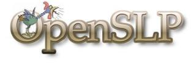
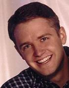
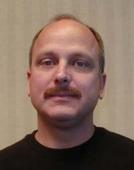
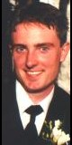

 |
|
| Matthew Peterson
mpeterson@calderasystems.com OpenSLP project maintainer, currently working at Caldera Systems, Inc. |
 |
| Jon Carey
jcarey@calderasystems.com As a senior developer of a real-world OpenSLP enabled product at Caldera Systems, Jon has provided valuable feedback and direction for the OpenSLP project. |
 |
| David McCormack
david.mccormack@ottawa.com Born in 1976, in Ottawa, Canada. Dave studied at Carleton University, receiving a Bachelor of Computer Science degree with a minor in Mathematics. Daves contributions to OpenSLP were sponsored by
Natural Sciences and Engineering Research
Council of Canada performing research into the Service Location Protocol.
|
 |